2026-10-25，从正式配置与ArcadeCombatViewController构建15个后续主题。每图均有原尺寸正式主角；静态隔离采样，左右危险区分别手动传入既有预警/生效状态，两个特殊怪分别展示既有常态/技能预警。使用统一观察相机与灯光，非自然对局。没有改动正式资源、配置或运行代码。
建议第一批：实际第7关巨石环阵＋第8关熔火巢穴，以及对应潜地怪/恶犬的外形和动作。第二批：第9关四个分支。Boss和后段水域/寒流危险辨识单独打磨。本页是当前状态证据，建议尚未制作或采用。
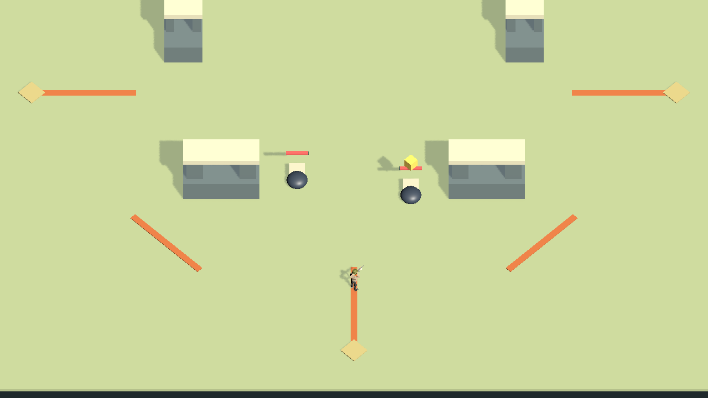
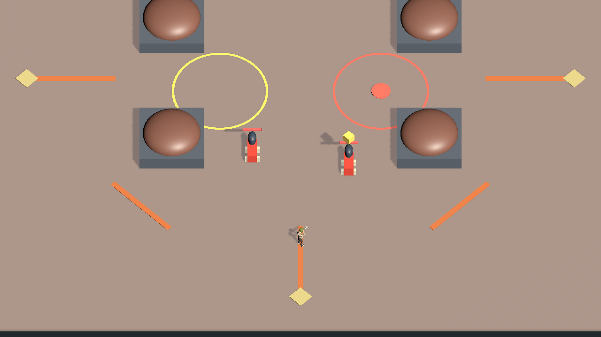
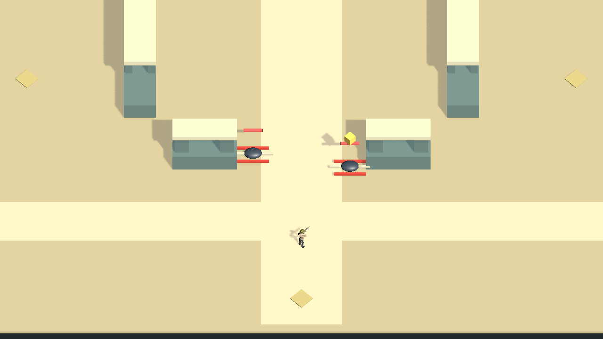
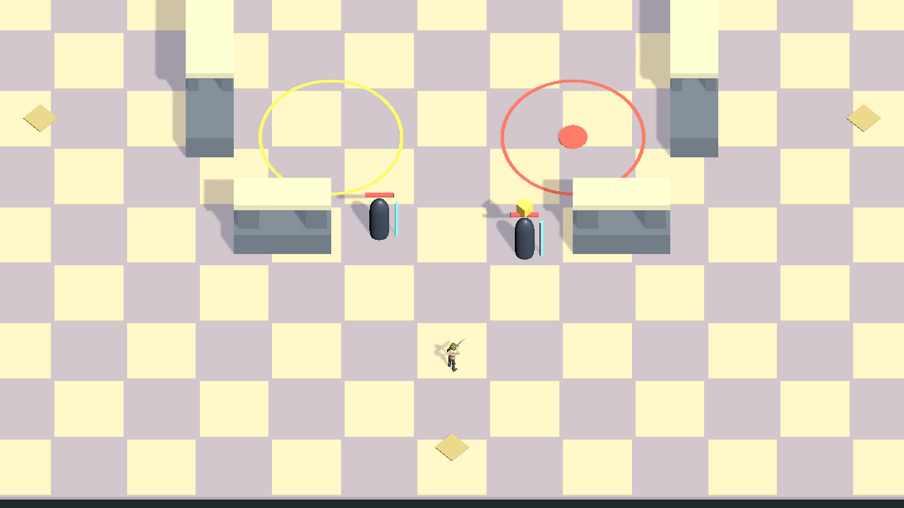
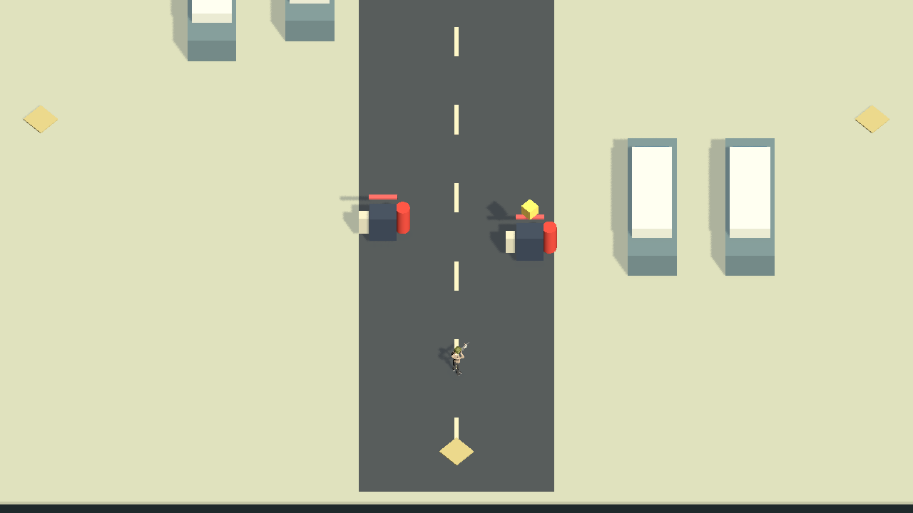
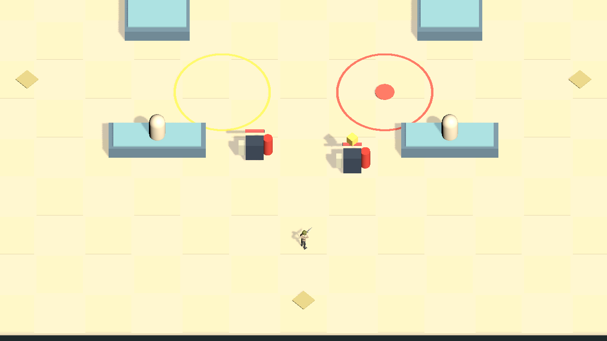
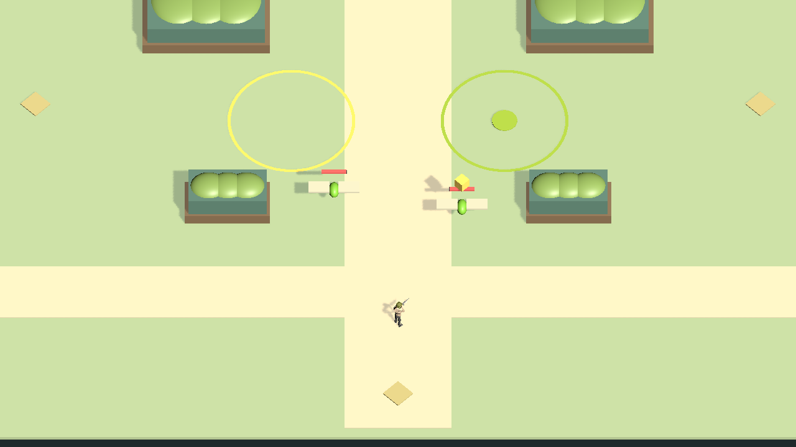
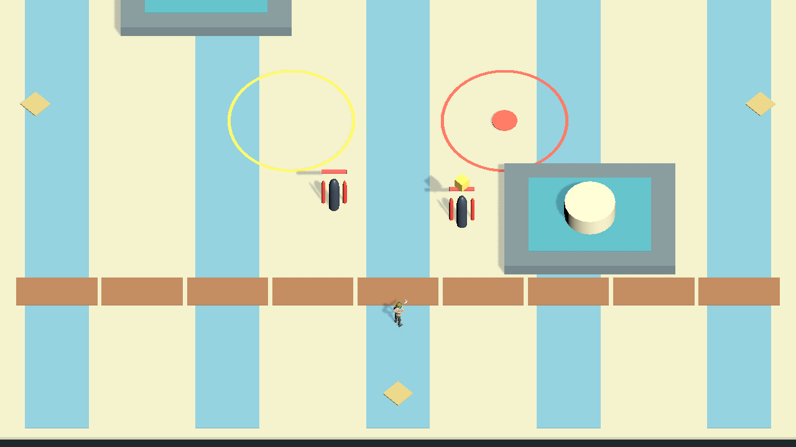
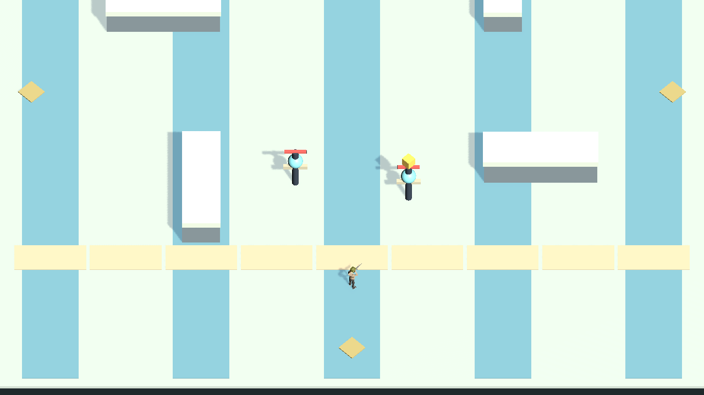
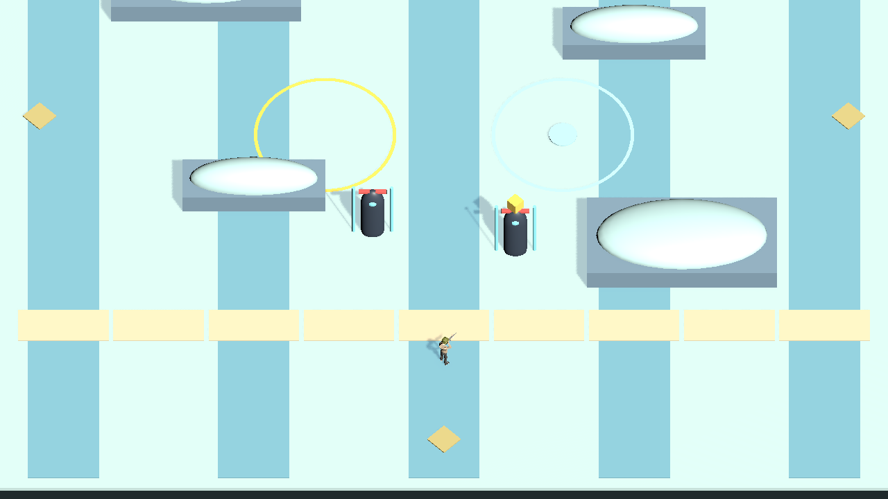
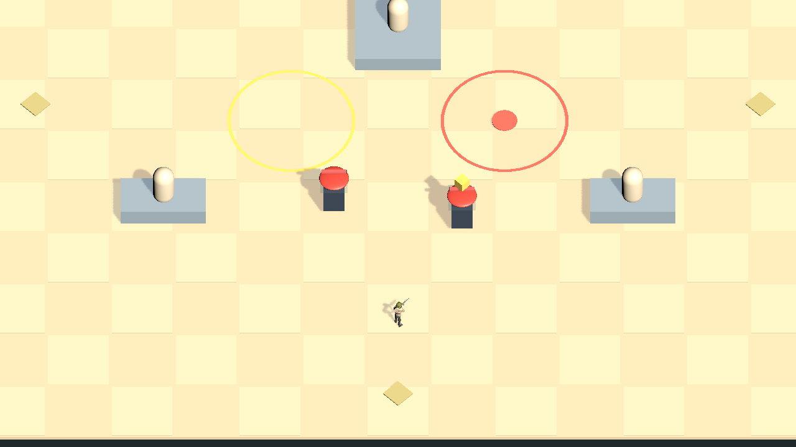
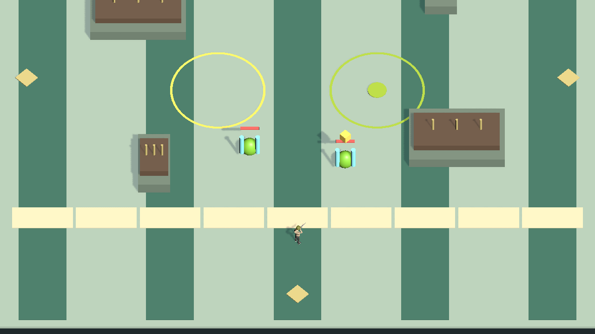
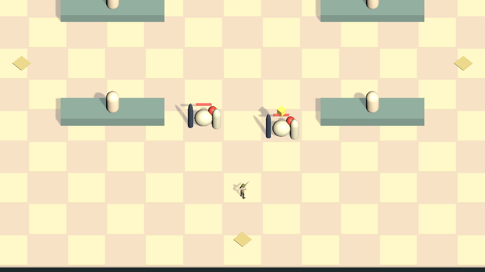
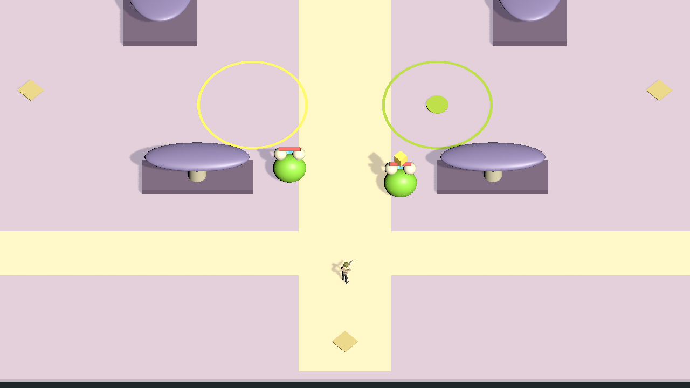
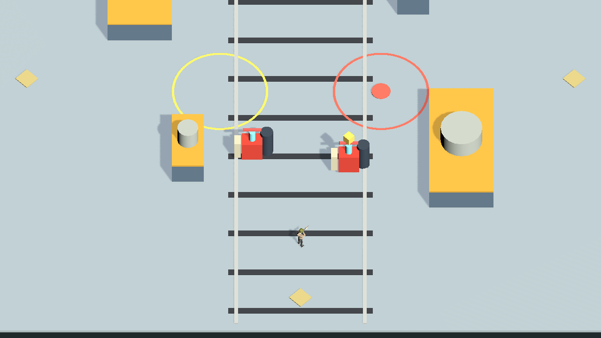
Guardian、ZRex、MegaAbomination、Papaback。静态外形采样；没有播放或验证技能时序。
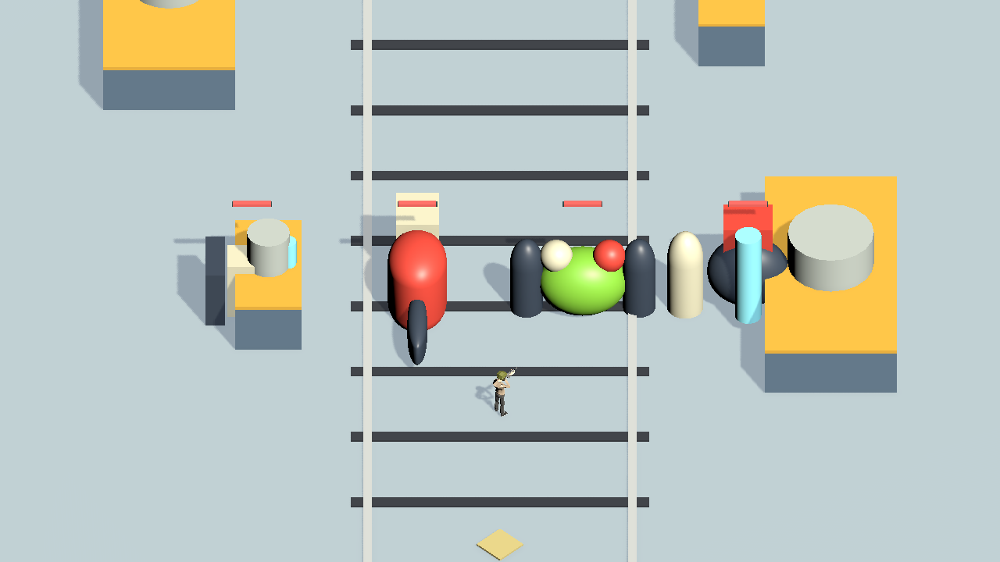